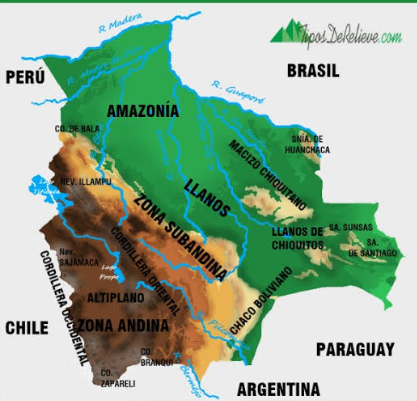

Se encuentra al oeste, con la Cordillera Occidental y Oriental. Contiene el Altiplano, entre los 3.600 y 4.000 m de altura. Aquí están nevados como el Illampu.
Ubicada entre la cordillera y las llanuras. Tiene montañas más bajas y valles fértiles. Incluye el Macizo de Chiquitania y zonas de transición hacia el oriente.
Al este y sureste. Los Llanos de Chiquitos y el Chaco Boliviano son tierras bajas, cálidas y planas. Aquí se encuentran las mayores llanuras del país.
Bolivia tiene dos vertientes: la del Amazonas (río Madera, Guaporé, Beni) y la del Plata (río Pilcomayo). También hay ríos endorreicos como el Desaguadero.
Al norte del país. Es una vasta selva tropical, rica en biodiversidad y recursos naturales. Forma parte de la gran cuenca amazónica compartida con Brasil y Perú.